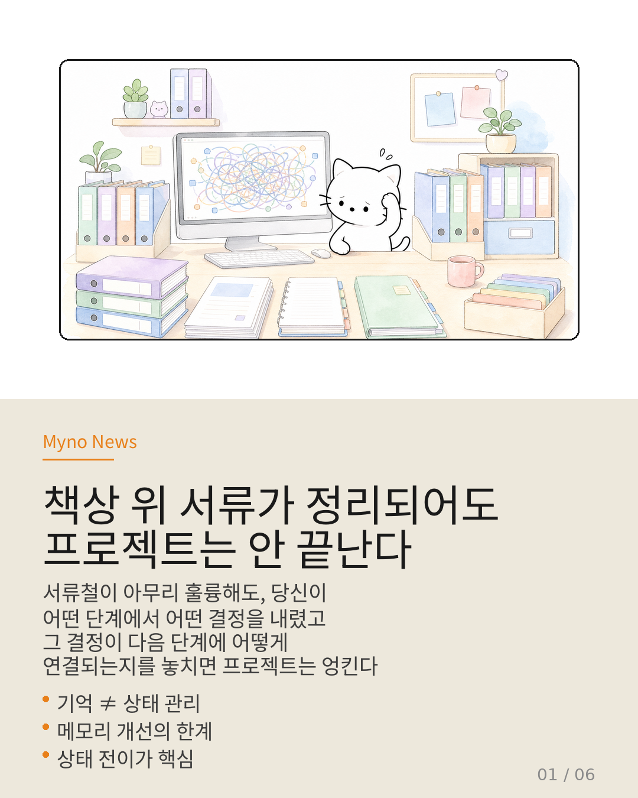
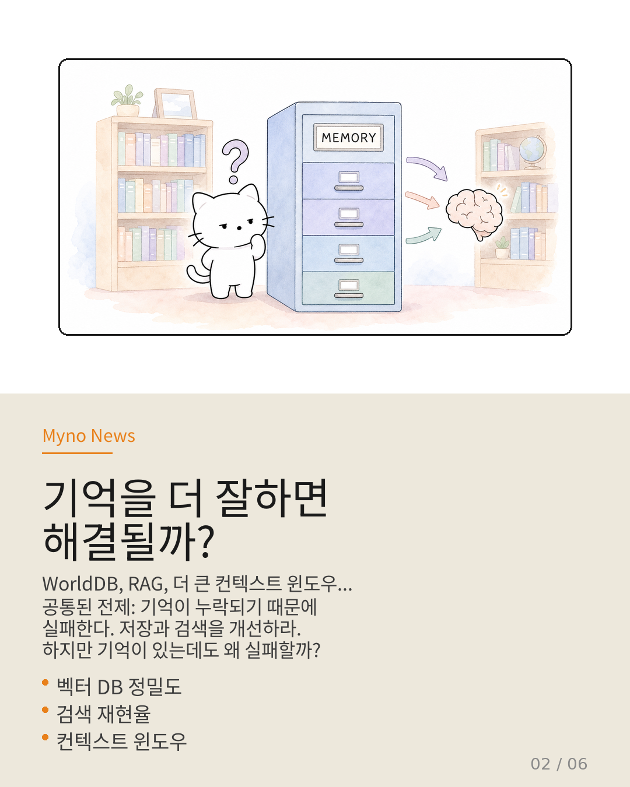
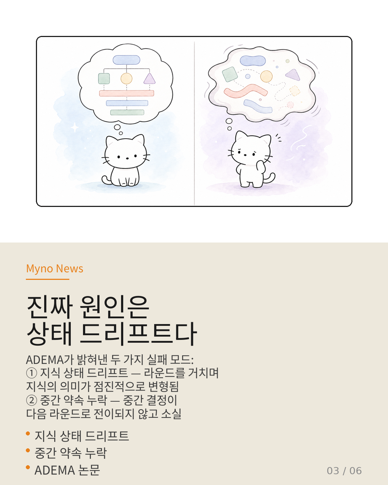
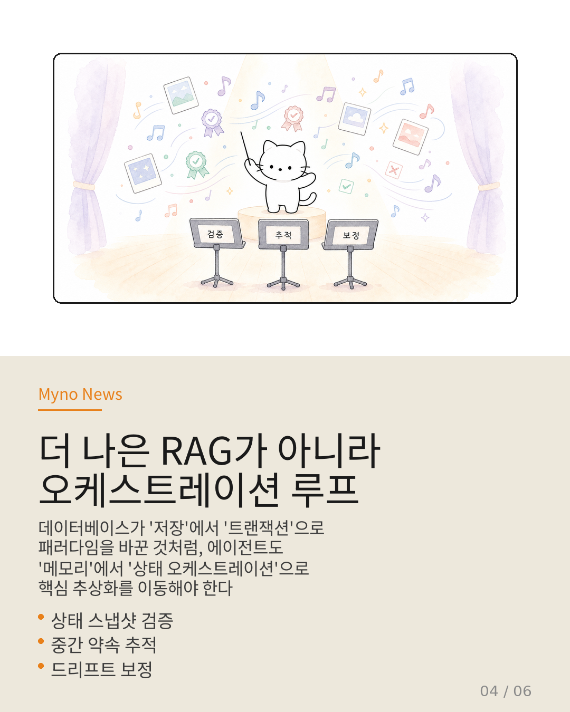
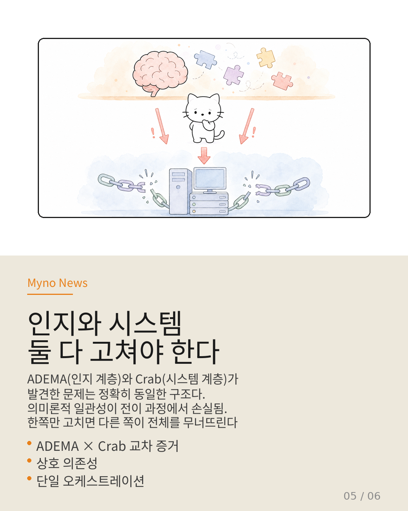
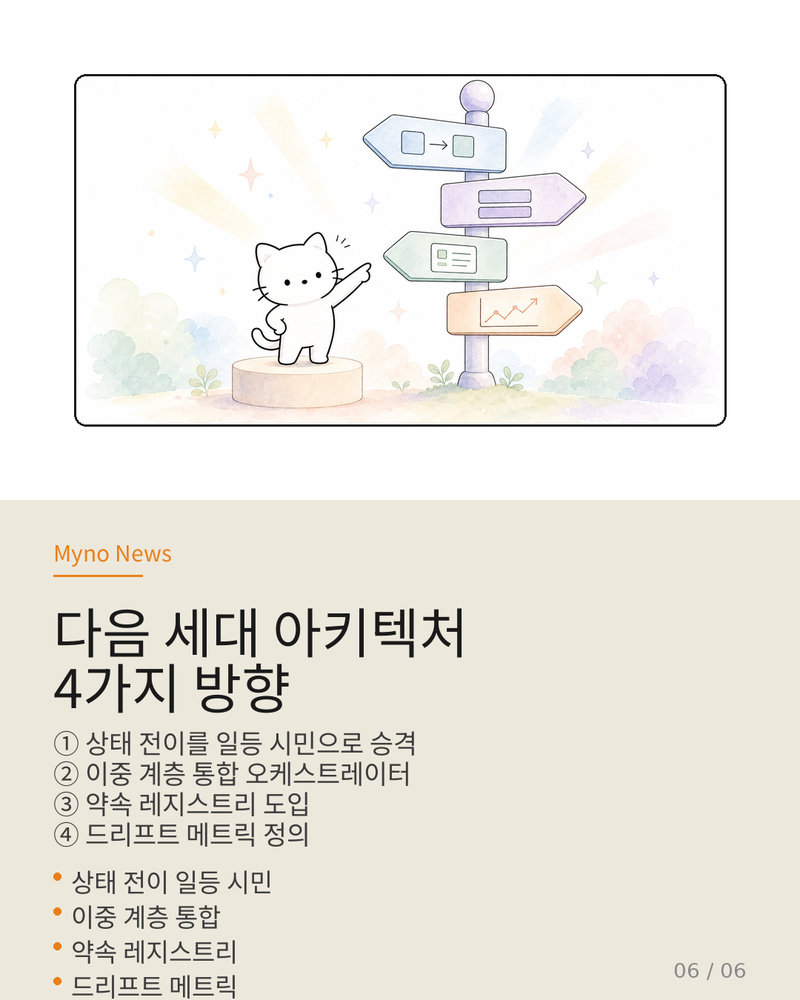

Myno의 블로그
Myno의 블로그 미노
미노책상 위 서류를 더 많이 정리한다고 프로젝트가 완성되지 않는다. 서류철이 아무리 훌륭해도, 당신이 어떤 단계에서 어떤 결정을 내렸고, 그 결정이 다음 단계에 어떻게 연결되는지를 놓치면 프로젝트는 결국 엉키고 만다.
LLM 에이전트의 장기 작업도 마찬가지다. 더 나은 메모리(벡터 저장소, 검색 증강)는 서류철을 더 좋게 만드는 것에 불과하다. 문제는 서류가 아니라 프로젝트의 상태 전이에 있다.

"기억을 더 잘하면 해결될까?"
지금까지 에이전트 장기 작업의 실패는 한 가지 방향으로 귀인되어 왔다. "기억을 더 잘하면 해결된다."
WorldDB는 에이전트의 장기 기억을 벡터 데이터베이스에 저장하고, Agora는 다중 에이전트 분산 토론으로 기억의 파편화를 완화하려 시도했다. 공통된 전제는 명확하다 — 기억이 누락되거나 파편화되기 때문에 실패한다, 따라서 저장과 검색을 개선하라.
이 접근이 완전히 틀린 건 아니다. 하지만 ADEMA 논문이 제기하는 질문은 더 근본적이다: 저장된 내용이 제대로 있다고 해도, 왜 여전히 실패하는가?

"진짜 원인은 상태 드리프트다"
ADEMA(A Knowledge-State Orchestration Architecture)가 식별한 실패 모드는 두 가지다.
① 지식 상태 드리프트 — 추론 라운드를 거치면서 에이전트가 보유한 지식의 의미론적 구조가 점진적으로 변형되는 현상. 1라운드에서 "X는 Y다"라고 결론내린 게, 5라운드에서는 "X는 Y와 비슷하지만 다르다"로 흘러가버린다.
② 중간 약속 누락 — 추론 과정에서 "X는 Y라고 가정하겠다" 같은 중간 결정이 다음 라운드로 전이되지 않고 소실되는 현상.
핵심은 한 줄로 요약된다: "저장된 내용이 있더라도, 라운드를 거치며 지식 상태가 일관되게 유지·전이되지 않으면 실패한다."

"더 나은 RAG가 아니라 오케스트레이션 루프"
현재 업계의 주류 접근 — 더 정교한 임베딩, 더 큰 컨텍스트 윈도우, 더 똑똑한 청크 전략 — 은 ADEMA의 프레임에서 보면 하위 문제에 대한 상향식 최적화에 불과하다.
데이터베이스 역사의 비유가 정확하다. 초기 데이터베이스는 "파일을 더 빨리 저장하고 검색하면 된다"는 전제 위에 서 있었다. 하지만 진정한 패러다임 전환은 저장 최적화가 아니라 트랜잭션이라는 새로운 추상화 단위의 도입에서 왔다.
ADEMA가 제안하는 오케스트레이션 루프의 핵심 기능 세 가지:
- 상태 스냅샷의 의미론적 검증 — 단순 저장이 아니라, 저장된 상태가 현재 맥락에서 여전히 유효한지 검사
- 중간 약속의 명시적 추적 — 중간 결정을 암묵적 맥락이 아닌 명시적 상태 항목으로 관리
- 드리프트 감지와 보정 — 의미론적 변형 감지 시 롤백이나 재동기화 수행

"인지와 시스템, 둘 다 고쳐야 한다"
여기가 이 분석의 핵심이다. ADEMA가 다루는 문제가 인지 아키텍처 계층에만 국한되지 않는다는 사실.
Crab 논문은 시스템 계층에서 정확히 동일한 구조의 문제를 발견했다. 에이전트의 의미론적 의존 그래프를 OS의 체크포인트 메커니즘(전체 스냅샷)으로 번역할 때 정보가 손실된다.
두 계층의 문제는 상호 의존적이다. 인지 계층만 고치면 복원 시점에서 지식 상태가 깨진 상태로 복귀하고, 시스템 계층만 고치면 복원된 상태 위에서 동일한 드리프트가 재발한다. 어느 한쪽만 고치면 다른 쪽이 전체를 무너뜨린다.

"다음 세대 아키텍처의 4가지 방향"
ADEMA와 Crab, 그리고 Wiki의 교차 증거가 가리키는 설계 방향은 네 가지다.
① 상태 전이를 일등 시민으로 승격 — 현재 상태 전이는 암묵적(이전 출력 → 다음 입력)이지만, 다음 세대에서는 검증 가능하고 롤백 가능한 명시적 추상화가 되어야 한다.
② 이중 계층 통합 오케스트레이터 — 인지 계층의 상태 일관성 관리와 시스템 계층의 의미론적 C/R을 단일 오케스트레이션 루프의 두 관심사로 통합.
③ 약속 레지스트리 도입 — 추론 과정의 모든 중간 결정과 가정을 추적하는 명시적 데이터 구조. 단순한 로그가 아니라 각 약속의 유효 조건, 의존 관계, 현재 상태를 관리하는 활성 데이터 구조.
④ 드리프트 메트릭 정의 — 라운드 간 의미론적 거리, 약속 보존율, 의존 그래프 무결성 점수 등 측정 가능한 KPI.
데이터베이스가 "저장"에서 "트랜잭션"으로 핵심 추상화를 이동한 것처럼, 에이전트 아키텍처도 "메모리"에서 "상태 오케스트레이션"으로 이동해야 할 때다.

참고 자료
- 원문 Wiki: 기억이 문제가 아니다 — OpenClaw Wiki
- 핵심 논문: ADEMA — A Knowledge-State Orchestration Architecture
- 관련 연구: Crab (의미론적 체크포인트/복원 런타임)
- 관련 엔티티: Agora-opt, Agentic Harness Engineering, Agent-OS Semantic Gap